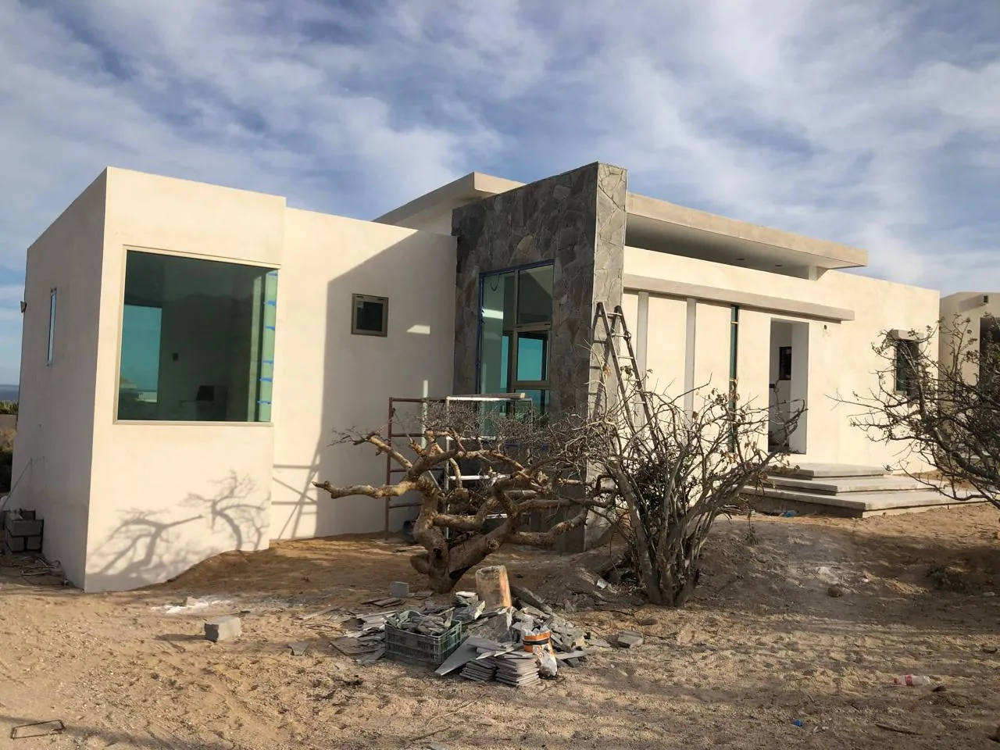

CONSTRUCTORA EN LA PAZ, B.C.S.
Ideas que
se vuelven
espacios.
Tu proyecto merece experiencia, carácter y una visión a tu medida. Construyamos lo que sigue.
PROYECTO · CONSTRUCCIÓN · INSTALACIONES
CONSTRUYENDO.
Desde 2008,
consolidando proyectos.
en la construcción
que nos respaldan
raíces locales
01NUESTRA ESENCIA
Los buenos espacios
comienzan con
buenas decisiones.
Construir es mucho más que levantar muros. Es dar forma al lugar donde vas a vivir, trabajar o hacer crecer tu negocio.
Somos PROJECTCONS. Desde 2008 consolidamos proyectos en el sector de la construcción. Nuestra experiencia se traduce en una mirada práctica: entender lo que necesitas y llevarlo a una solución a tu medida.
Conoce cómo podemos ayudarte02DEL PLANO AL ESPACIO
El trabajo
habla por sí mismo.
Una mirada a nuestro portafolio.
Casas, espacios comerciales y proyectos para crecer.


03CONSTRUIR CON CLARIDAD
Tu idea es
el punto de partida.
Para empezar, no necesitas tener todas las respuestas. Una buena conversación ayuda a definir el camino.
Conversemos- 01
Escuchar tu idea
Qué quieres construir, para quién y cómo imaginas vivir ese espacio.
- 02
Entender tu proyecto
Ubicación, terreno, planos, necesidades y posibilidades de inversión.
- 03
Definir el siguiente paso
Conversar sobre el alcance y la información necesaria para una propuesta.

BAJA CALIFORNIA SUR / MÉXICO04UN PROYECTO DE VIDA EN LA PAZ
Construye aquí.
Vive a tu manera.
Si buscas una constructora en La Paz, BCS, para construir tu casa o desarrollar un espacio para tu negocio, empecemos por conocer tu proyecto.
Una vivienda en La Paz empieza con decisiones sobre el terreno, la distribución y lo que necesitas de cada espacio. Comparte tus ideas con un equipo con experiencia en construcción.
Quiero construir en La Paz05ANTES DE CONSTRUIR
Las preguntas
que importan.
Quiero construir mi casa en La Paz. ¿Por dónde empiezo?
Cuéntanos dónde está tu terreno, qué tipo de vivienda imaginas y en qué etapa estás. Si ya tienes planos o referencias, puedes compartirlos por WhatsApp para conversar sobre los siguientes pasos.
¿Qué información necesito para solicitar una cotización?
Ubicación, tipo de proyecto, superficie aproximada si la conoces, presupuesto orientativo y fecha deseada. Una cotización requiere revisar el alcance; el formulario no genera un precio automático.
¿Cuánto cuesta construir en La Paz, BCS?
No hay un precio único. Influyen el terreno, los metros cuadrados, el diseño, los acabados y las condiciones de la obra. Conocer estos datos permite definir una propuesta acorde a tu proyecto.
¿Puedo consultar por un proyecto fuera de La Paz?
Sí. Indica la ubicación en Baja California Sur al contactarnos. La disponibilidad y el alcance se revisan para cada proyecto.
¿Las fotos de ejemplo son obras de PROJECTCONS?
No. El material propio se identifica como portafolio de PROJECTCONS. Las fotos marcadas como referencia visual son ejemplos de terceros, utilizados temporalmente mientras se completa la información de cada proyecto.
06EL PRIMER PASO
Todo empieza
con una
conversación.
Una idea, un terreno o un proyecto avanzado. Cuéntanos en qué punto estás y qué te gustaría construir.
Tu idea ya tiene un punto de partida.
Revisa el resumen. WhatsApp se abrirá con este mensaje; tú decides cuándo enviarlo. Puedes adjuntar planos o fotos dentro del chat.